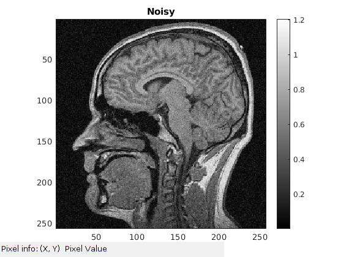
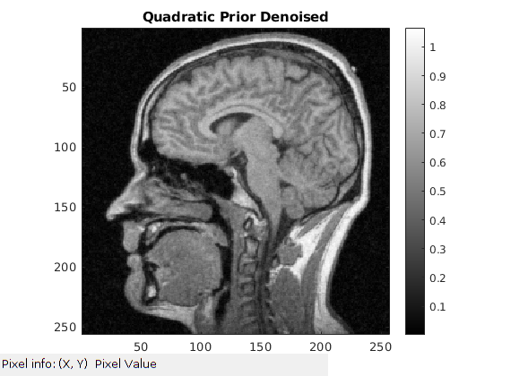
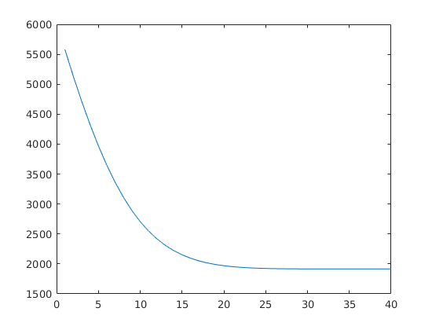
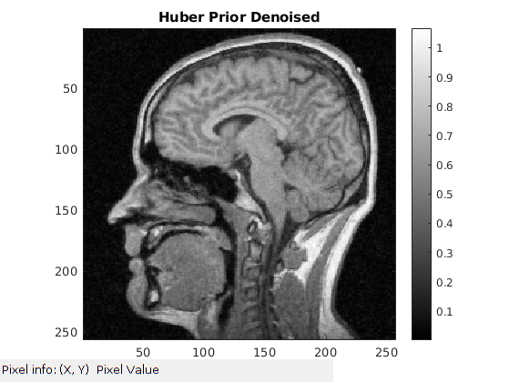
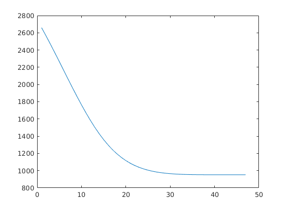
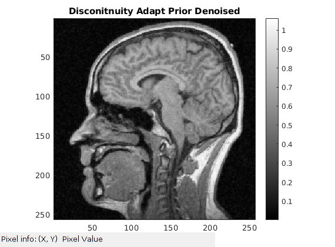
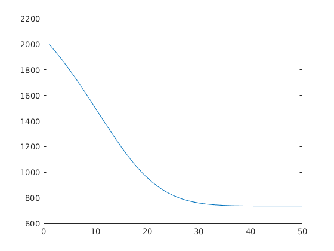

Contents
MyMainScript
% Setting the color scale % my_num_of_colors = 256; col_scale = [0:1/(my_num_of_colors-1):1]'; my_color_scale = [col_scale,col_scale,col_scale]; % Set to_save to 1, if you want to save the generated pictures % to_save = 1; is_color = 0; % Loading the pictures % brain_data = load('../../data/assignmentImageDenoisingBrainNoisy.mat'); brain_noisy = brain_data.imageNoisy; tic;
Original Image
savefig(my_color_scale,abs(brain_noisy),"Noisy","noisy_brain.png",is_color,to_save);
Part a : Extracting the top 50 x 50 non overlapping portion to determine sigma level of noise
brain_bg = brain_noisy(1:50,1:50); real_brain_bg = real(brain_bg); imag_brain_bg = imag(brain_bg); std_real = sqrt(var(real_brain_bg(:))); std_imag = sqrt(var(imag_brain_bg(:))); step_size = 0.005; max_iter = 50; sig = mean([std_imag,std_real]);
Part b Using all the priors along with gaussian noice likelihood%
We also tried using Rician which did achieve a lot of smoothing for extreme values but not for brain part
Quadratic Prior %
Best Params - % alfa = 0.008
alfa = 0.008; gam = 0.5; % Doesn't play a role in quadratic though prior = "quadratic"; like = "gauss"; [denoised_img_quad,loss_list] = denoiser(brain_noisy,alfa,step_size,max_iter,sig,gam,prior,like); savefig(my_color_scale,abs(denoised_img_quad),"Quadratic Prior Denoised","quadratic_denoised_brain.png",is_color,to_save); fig = figure; plot(loss_list); saveas(fig, "Quadratic loss-vs-iterations.png") % close(fig); 
Huber Prior
Best Params - % alfa = 0.004; gam = 0.2;
alfa = 0.004; gam = 0.2; prior = "huber"; like = "gauss"; [denoised_img_huber,loss_list] = denoiser(brain_noisy,alfa,step_size,max_iter,sig,gam,prior,like); savefig(my_color_scale,abs(denoised_img_huber),"Huber Prior Denoised","huber_denoised_brain.png",is_color,to_save); fig = figure; plot(loss_list); saveas(fig, "Huber loss-vs-iterations.png") % close(fig); 
Disconitnuity Adaptive Prior %
Best Params - % alfa = 0.003; gam = 0.3;
alfa = 0.003; gam = 0.3; prior = "discon_adap"; like = "gauss"; [denoised_img_disc_adap,loss_list] = denoiser(brain_noisy,alfa,step_size,max_iter,sig,gam,prior,like); savefig(my_color_scale,abs(denoised_img_disc_adap),"Disconitnuity Adapt Prior Denoised","discon_adap_denoised_brain.png",is_color,to_save); fig = figure; plot(loss_list); saveas(fig, "Disconitnuity Adaptive loss-vs-iterations.png") % close(fig); toc; % Helper function to display and save processed images % function savefig(my_color_scale,modified_pic,title_name,file_name,is_color,to_save) % if to_save==1 % fig = figure('units','normalized','outerposition',[0 0 1 1]); colormap(my_color_scale); % else fig = figure; colormap(my_color_scale); % end if is_color == 1 colormap jet; else colormap(gray); end imagesc(modified_pic), title(title_name), colorbar, daspect([1 1 1]), axis tight; impixelinfo(); if to_save == 1 saveas(fig,file_name)%,close(fig); end end
Elapsed time is 10.829342 seconds. 